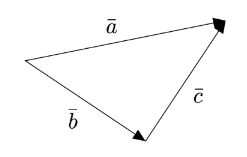
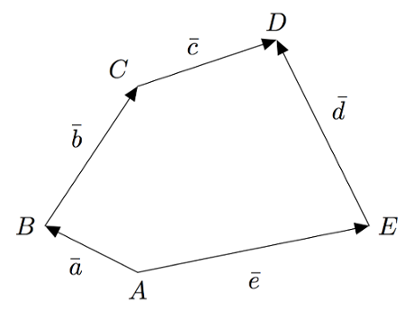
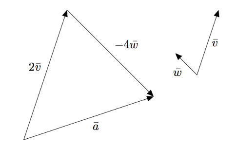
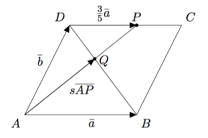
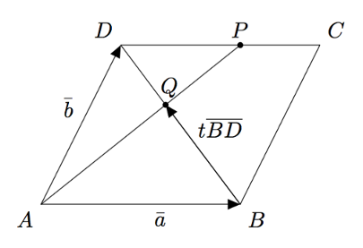

Geometriaa vektoreiden avulla
Luvun tavoitteet
Geometriaa vektoreiden avulla
Edellisissä luvuissa olemme tutustuneet $xy$- ja $xyz$-koordinaatistojen vektoreihin ja niillä laskemiseen. Vektoreita voidaan kuitenkin käyttää myös ilman koordinaatistoa. Mallikuvat, joita olemme piirtäneet kolmiulotteisen avaruuden tilanteista, ovat olleet askel tähän suuntaan.
Palautetaan mieleen, että vektoreiden summan $\bar{v}+\bar{w}$ voi määrittää piirtämällä vektorit $\bar{v}$ ja $\bar{w}$ peräkkäin. Erotuksen $\bar{v}-\bar{w}$ voi puolestaan määrittää piirtämällä peräkkäin vektorit $\bar{v}$ ja $-\bar{w}$. Esimerkiksi alla olevassa kuvassa $$\begin{align*} \va &= \vb + \vc \\ \vb &= \va - \vc \\ \vc &= -\vb + \va = \va - \vb. \end{align*}$$

Vektoreiden yhteen- ja vähennyslasku
Alla on kuvattu suunnikas $ABCD$. Ilmaise sen sivuvektoreiden $\va$ ja $\vb$ avulla
- lävistäjävektori $\pv{AC}$
- lävistäjävektori $\pv{DB}$
- lävistäjävektori $\pv{BD}$.

Vektoreiden yhteen- ja vähennyslasku
Alla kuvattu monitahokas on suuntaissärmiö, eli sen kaikki tahkot ovat suunnikkaita. Ilmaise sen särmävektoreiden $\va$, $\vb$ ja $\vc$ avulla
- avaruuslävistäjä $\pv{AG}$
- avaruuslävistäjä $\pv{EC}$
- avaruuslävistäjä $\pv{HB}$.
- avaruuslävistäjä $\pv{DF}$.

Vektoreiden yhteen- ja vähennyslasku
Tarkastele alla olevaa kuvaa. Esitä
- vektori $\pv{AC}$ vektoreiden $\va$ ja $\vb$ avulla
- vektori $\pv{BE}$ vektoreiden $\vb$, $\vc$ ja $\bar{d}$ avulla
- vektori $\pv{EC}$ kahdella eri tavalla.

Joissakin tilanteissa vektorin pituus täytyy muuttaa sopivaksi kertomalla vektoria reaaliluvulla. Esimerkiksi alla olevassa kuvassa piste $C$ jakaa janan $AB$ suhteessa $3:5$. Tällöin $$\pv{AC} = \frac{3}{8}\pv{AB}.$$

Vektori $\pv{OC}$ saadaan lausuttua vektorien $\va = \pv{OA}$ ja $\vb = \pv{OB}$ avulla esimerkiksi seuraavasti: $$\begin{align*} \pv{OC} &= \pv{OA} + \pv{AC} \\ &= \pv{OA} + \frac{3}{8}\pv{AB} \\ &= \va + \frac{3}{8}(-\va + \vb) \\ &= \va - \frac{3}{8}\va + \frac{3}{8}\vb \\ &= \frac{5}{8}\va + \frac{3}{8}\vb. \end{align*}$$
Vektorin kertominen reaaliluvulla
Tarkastellaan edelleen alla olevaa kuvaa. Edellä lausuttiin vektori $\pv{OC}$ vektorien $\va$ ja $\vb$ avulla etsimällä reitti pisteestä $O$ pisteen $A$ kautta pisteeseen $C$.
Lausu vektori $\pv{OC}$ vektorien $\va$ ja $\vb$ avulla etsimällä reitti pisteestä $O$ pisteen $B$ kautta pisteeseen $C$. Saatko saman tuloksen kuin edellä?
Vektorin kertominen reaaliluvulla
Kolmion $ABC$ sivuvektorit ovat $\va = \pv{AB}$ ja $\vb = \pv{AC}$. Piste $D$ on sivun $BC$ keskipiste. Piirrä tilanteesta mallikuva ja ilmaise vektoreiden $\va$ ja $\vb$ avulla
- sivuvektori $\pv{BC}$
- vektori $\pv{BD}$
- keskijanavektori $\pv{AD}$.
Vektorin pituus
Tiedetään, että vektorit $\vv$ ja $\vw$ ovat yksikkövektoreita eli niiden pituus on yksi. Määritä vektorin $4\vv+6\vw$ pituus, jos vektorit $\vv$ ja $\vw$ ovat
- samansuuntaiset
- vastakkaissuuntaiset
- kohtisuorassa toisiaan vastaan.
Oletetaan, että $\vv \neq \bar{0}$, $\vw \neq \bar{0}$ ja $\vv \nparallel \vw$. Palautetaan mieleen, että jos vektori $\va$ voidaan kirjoittaa muodossa $$\va = s\vv + t\vw$$ missä $s$ ja $t$ ovat reaalilukuja, niin sanotaan, että $s\vv$ ja $t\vw$ ovat vektorin $\va$ vektoreiden $\vv$ ja $\vw$ suuntaiset komponentit. Tätä on havainnollistettu alla olevassa kuvassa.

Seuraavan teoreeman mukaan mikä tahansa vektori voidaan jakaa vektoreiden $\vv$ ja $\vw$ suuntaisiin komponentteihin enintään yhdellä tavalla.
TEOREEMA
Oletetaan, että $\vv \neq \bar{0}$, $\vw \neq \bar{0}$ ja $\vv \nparallel \vw$. Jos $s\vw + t\vv = p\vw + q\vv$, niin $s = p$ ja $t = q$.
Perustelu: Oletetaan, että $$s\vw + t\vv = p\vw + q\vv.$$ Lisäämällä yhtälön molemmille puolille $-p\vw - t\vv$ yhtälö saadaan muotoon
$$s\vw - p\vw = q\vv - t\vv.$$
Kun yhtälön kummallakin puolella otetaan yhteinen tekijä, saadaan yhtälö muotoon
$$(s-p)\vw = (q-t)\vv.$$
Jos kerroin $s-p \neq 0$, saadaan ratkaistua
$$\vw = \frac{q-t}{s-p}\vv.$$
Tämä tarkoittaa, että $\vw \parallel \vv$ (tapauksessa, jossa $q-t \neq 0$) tai $\vw = \bar{0}$ (tapauksessa, jossa $q-t = 0$). Tämä on mahdotonta, koska oletuksen mukaan $\vw \neq \bar{0}$ ja $\vv \nparallel \vw$. Siis $s-p = 0$.
Yhtälö saa nyt siis muodon
$$0\vw = (q-t)\vv$$
eli
$$(q-t)\vv = \bar{0}.$$
Jos kerroin $q-t \neq 0$, saadaan tästä ratkaistua
$$\vv = \frac{1}{q-t}\bar{0} = \bar{0}.$$
Tämä on mahdotonta, koska oletuksen mukaan $\vv \neq \bar{0}$. Siis $q-t = 0$.
Koska $s-p = 0$ ja $q-t = 0$, niin $s = p$ ja $q = t$.
Edellistä teoreemaa voidaan hyödyntää tilanteissa, joissa on mahdollista muodostaa jokin vektori annettujen vektoreiden avulla kahta eri reittiä. Tällä tavalla voidaan ratkaista erilaisia geometrisia ongelmia. Tätä havainnollistetaan seuraavassa esimerkissä.

Yllä olevan kuvan tilanteessa piste $Q$ on sekä janalla $AP$ että lävistäjällä $BD$, joten vektori $\pv{AQ}$ voidaan muodostaa kahta eri reittiä vektoreiden $\va$ ja $\vb$ avulla. Selvitetään, missä suhteessa piste $Q$ jakaa lävistäjän $BD$, kun tiedetään, että piste $P$ jakaa sivun $DC$ suhteessa $3:2$.

Koska piste $Q$ on janalla $AP$, vektorit $\pv{AQ}$ ja $\pv{AP}$ ovat yhdensuuntaiset. Siten on olemassa luku $s$, jolla $$\pv{AQ} = s\pv{AP}.$$ Vektori $\pv{AP}$ voidaan puolestaan kirjoittaa summana $$\pv{AP} = \pv{AD} + \pv{DP}.$$ Koska piste $P$ jakaa sivun $DC$ suhteessa $3:2$, on $$\begin{align*} \pv{DP} &= \frac{3}{3+2} \pv{DC} \\ &= \frac{3}{5}\va. \end{align*}$$ Yhdistämällä kaikki edelliset tiedot saadaan $$\begin{align*} \pv{AQ} &= s\pv{AP} \\ &= s(\pv{AD} + \pv{DP}) \\ &= s(\vb + \frac{3}{5}\va) \\ &= \frac{3}{5}s\va + s\vb. \end{align*}$$

Koska piste $Q$ on lävistäjällä $BD$, vektorit $\pv{BQ}$ ja $\pv{BD}$ ovat yhdensuuntaiset. Siten on olemassa luku $t$, jolla $$\pv{BQ} = t\pv{BD}.$$ Vektori $\pv{BD}$ voidaan puolestaan kirjoittaa summana $$\begin{align*} \pv{BD} &= \pv{BA} + \pv{AD} \\ &= -\va + \vb \\ &= \vb - \va. \end{align*}$$ Muodostetaan näiden tietojen avulla vektori pisteestä $A$ pisteeseen $Q$: $$\begin{align*} \pv{AQ} &= \pv{AB} + \pv{BQ} \\ &= \va + t\pv{BD} \\ &= \va + t(\vb - \va) \\ &= \va + t\vb - t\va \\ &= (1-t)\va + t\vb. \end{align*}$$
Nyt tiedetään, että $\pv{AQ} = \frac{3}{5}s\va + s\vb$ ja $\pv{AQ} = (1-t)\va + t\vb$. Siis $$\frac{3}{5}s\va + s\vb = (1-t)\va + t\vb.$$ Edellisen teoreeman mukaan tästä yhtälöstä seuraa, että $$ \left\{\begin{aligned} \frac{3}{5}s &= 1-t \\ s &= t. \end{aligned}\right. $$ Kun ylempään yhtälöön sijoitetaan $s = t$, se saa muodon $$\frac{3}{5}t = 1-t$$ lisäämällä molemmille puolille $t$ se saadaan muotoon $$\frac{8}{5}t = 1.$$ Siis $$t = \frac{5}{8}.$$ Koska $$\pv{BQ} = t\pv{BD} = \frac{5}{8}\pv{BD},$$ voidaan päätellä, että jana $BD$ voidaan jakaa kahdeksaan osaan, joista viisi muodostaa janan $BQ$ ja kolme muodostaa janan $QD$. Piste $Q$ jakaa siis janan $BD$ suhteessa $5:3$.
TEHTÄVÄSARJA II
Oletetaan, että kumpikaan vektoreista $\vv$ ja $\vw$ ole nollavektori. Oletetaan lisäksi, että $\vw-3\vv=5(\vv-\vw)$. Perustele näiden tietojen avulla, että vektorit $\vv$ ja $\vw$ ovat yhdensuuntaiset. Ovatko ne saman- vai vastakkaissuuntaiset?
Tiedetään, että vektoreista $\va$ ja $\vb$ kumpikaan ei ole nollavektori. Lisäksi tiedetään, että $\va \nparallel \vb$. Onko mahdollista, että $-2\va + 15\vb = \bar{0}$? Perustele vastauksesi.
Tiedetään, että vektorin pistetulo itsensä kanssa on sama kuin sen pituuden neliö eli $\va \cdot \va = |\va|^2$.
- Muokkaa tämän tiedon ja pistetulon laskusääntöjen avulla lauseke $|\vv + \vw|^2$ muotoon, jossa näkyy vektorin $\vv$ pituus $|\vv|$ ja vektorin $\vw$ pituus $|\vw|$.
- Mikä on vektorin $\vv + \vw$ pituus, jos $|\vv|=7, |\vw|=5$ ja $\vv\cdot \vw = 1$? Edellisestä kohdasta on apua.
Kolmiosta $ABC$ tiedetään, että sivun $AB$ pituus on 4 ja sivun $AC$ pituus on 6. Kuinka pitkä on sivu $BC$, jos
- pistetulo $\pv{AB} \cdot \pv{AC} = 5$
- pistetulo $\pv{AB} \cdot \pv{AC} = -5$.